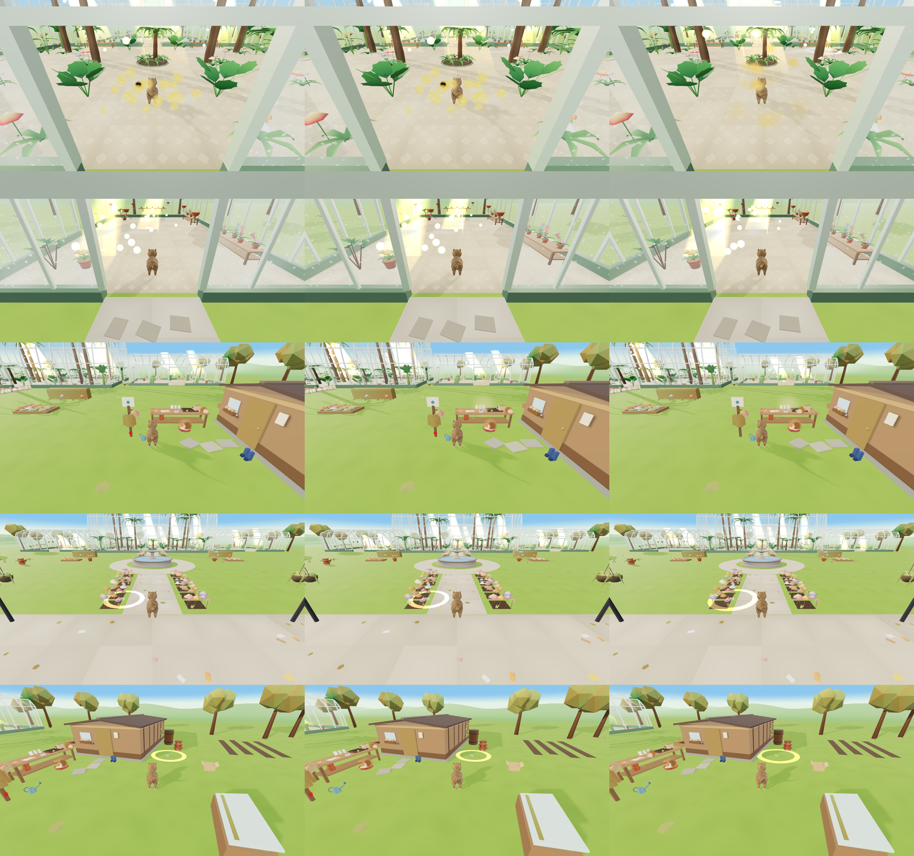

Columns: pass 6 | pass 7 | pass 7 after standing still 3+ s (the golden moment: pollen sparkles drift up round her, a soft chime). Rows: the hall door down the aisle, the orchid house, the potting bench, the court with the fountain, the shed corner (page: tools/verify/verify-greenhouse.html shots p7_* and p7g_*; 1280x720). Near each spot the picture warms (fill sky leans gold, so her fur rim is warm too; mist and shafts warm and strengthen), the far fog draws in, and a soft halo blooms on the focal point. Fixes: the glass fog near her is thinner (less milk in the hall), the pollen is small and gold (it was big white balls), the dusk fireflies are bigger and nearer. Honest: the grade is subtle at thumbnail size; no edge-dimming (no vignette uniform exists in this game); shafts are not re-aimed.
